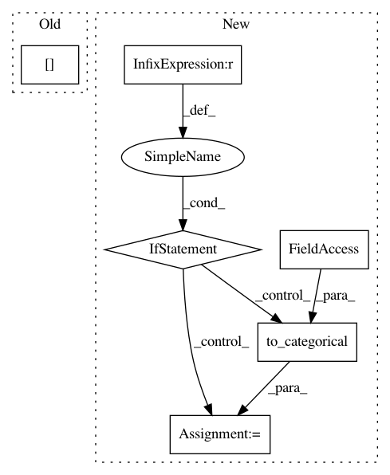

baecce5a6fbe4576ca8348a93dc56f07e7ba84f6,niftynet/contrib/csv_reader/csv_reader.py,CSVReader,_parse_csv,#CSVReader#Any#Any#,72
Before Change
df.index = df["subject_id"]
assert set(df.index) == set(self.subject_ids)
df = df.loc[self.subject_ids]
if to_ohe and len(df.columns[1:])==1:
_dims = len(list(df[df.columns[1]].unique()))
_indexable_output = self.to_ohe(df["label"].values, _dims)
return df, _indexable_output, _dims
After Change
def _parse_csv(self, path_to_csv, to_ohe):
tf.logging.warning("This method will read your entire csv into memory")
df = pd.read_csv(path_to_csv, index_col=0, header=None)
if set(df.index) != set(self.subject_ids):
print(set(self.subject_ids) - set(df.index))
tf.logging.fatal("csv file provided at: {} does not have all the subject_ids".format(path_to_csv))
raise Exception
if to_ohe and len(df.columns)==1:
_dims = len(list(df[1].unique()))
_indexable_output = self.to_ohe(df[1].values, _dims)
return df, _indexable_output, _dims
elif not to_ohe and len(df.columns==1):
_dims = 1
_indexable_output = self.to_categorical(df[1].values, df[1].unique())
return df, _indexable_output, _dims
elif not to_ohe:
_dims = len(df.columns)
_indexable_output = list(df.values)
In pattern: SUPERPATTERN
Frequency: 3
Non-data size: 6
Instances
Project Name: NifTK/NiftyNet
Commit Name: baecce5a6fbe4576ca8348a93dc56f07e7ba84f6
Time: 2019-06-05
Author: ucabtmv@ucl.ac.uk
File Name: niftynet/contrib/csv_reader/csv_reader.py
Class Name: CSVReader
Method Name: _parse_csv
Project Name: IBM/adversarial-robustness-toolbox
Commit Name: e09f411ffe0feee5034f73581054cb2c52e24e1d
Time: 2019-07-18
Author: beat.buesser@ie.ibm.com
File Name: art/classifiers/scikitklearn.py
Class Name: ScikitlearnLogisticRegression
Method Name: class_gradient
Project Name: IBM/adversarial-robustness-toolbox
Commit Name: 07f6166adf61e930721fd0553e0b6b5c0a0c9084
Time: 2019-07-08
Author: M.N.Tran@ibm.com
File Name: art/attacks/boundary.py
Class Name: BoundaryAttack
Method Name: generate